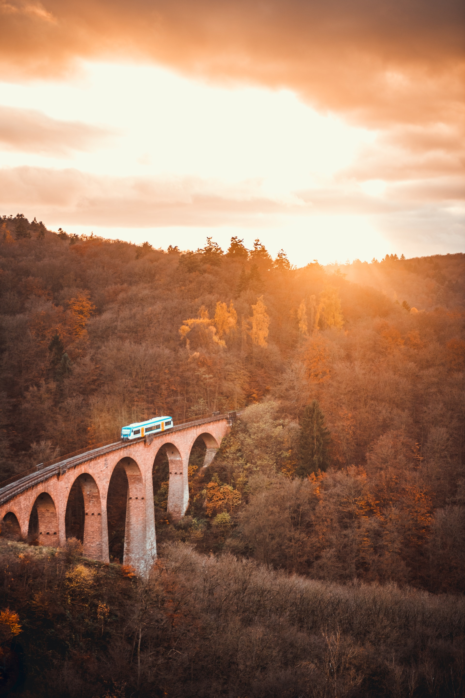
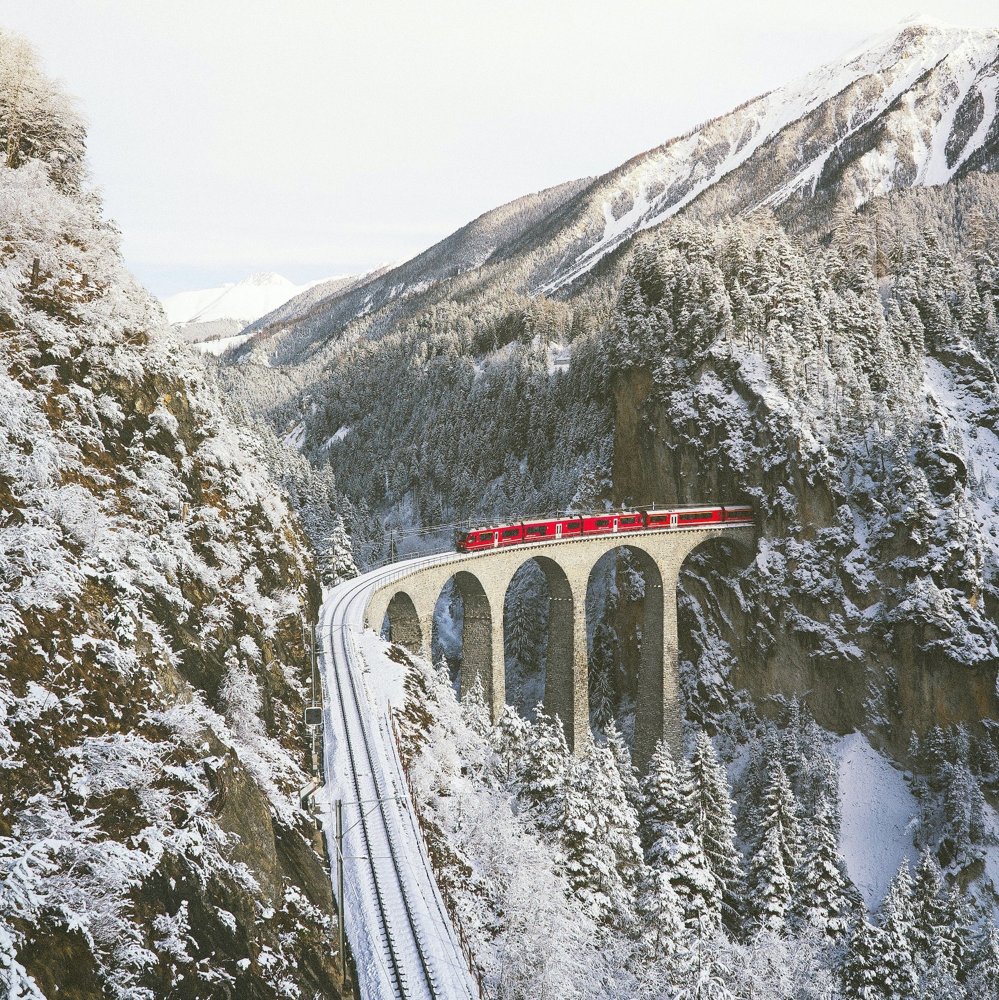
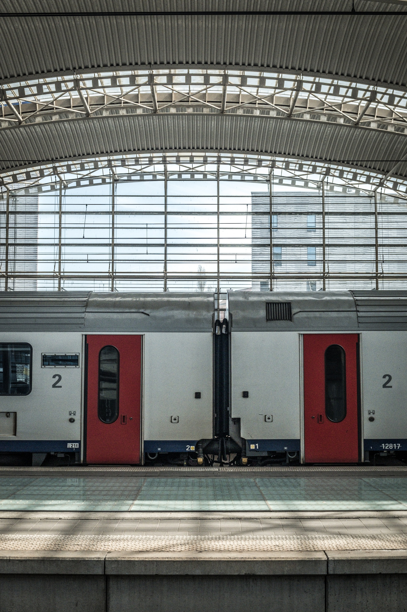
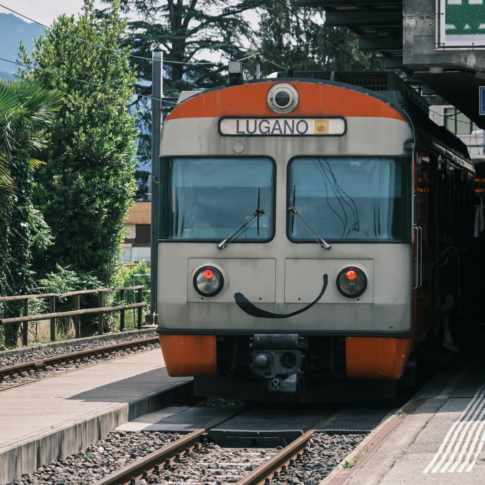

Interrail

Wat is Interrail?
Een Interrail-pas is een ticket waarmee je onbeperkt kunt reizen per trein door verschillende Europese landen.Met deze pas heb je de vrijheid om op een flexibele en voordelige manier door Europa te reizen en diverse bestemmingen te verkennen.
De pas biedt toegang tot een uitgebreid netwerk van treinen, inclusief hogesnelheidstreinen en regionale treinen.
Je kunt naar populaire steden reizen, historische bezienswaardigheden verkennen en genieten van prachtige landschappen tijdens je treinreis.
Het gebruik van een Interrail-pas is eenvoudig.
Je hoeft alleen je pas te tonen en in te stappen in de trein.
Sommige treinen vereisen mogelijk een zitplaatsreservering, maar de meeste treinen zijn vrij toegankelijk met de pas.
Een Interrail-pas biedt een geweldige manier om Europa te ontdekken, of je nu alleen reist, met vrienden of met familie.
Het stelt je in staat om grenzen te overschrijden, nieuwe culturen te ervaren en onvergetelijke avonturen te beleven tijdens je reis door het prachtige continent.
Reisdagen?
Dit lijkt eerst ingewikkeld, maar dat is het helemaal niet!Een reisdag is een dag waarop je met de trein reist, binnen een langere tijdsperiode.
Dus als je bijvoorbeeld een pas koopt van 4 reisdagen binnen 1 maand wil dit zeggen dat je binnen een tijdsperiode van een maand 4 dagen met de trein mag reizen.
Een reisdag loopt ook 00:00 tot 23:59, dit heeft zijn voor- en nadelen.
Het nadeel is dat als je na middernacht nog een overstap dient te maken je automatisch een nieuwe reisdag start, dus let hierop bij het plannen van je reis.
Maar deze regel heeft wel een gigantisch voordeel bij het gebruik van nachttreinen, stap je 's avonds op de trein en stap je na middernacht niet meer over, dan kan je je reis op de nachttrein na middernacht uitrijden zonder een nieuwe reisdag te gebruiken.
Maar let wel op, zodra je na middernacht op een andere trein stapt gebruik je een nieuwe reisdag.


Reizen in je eigen land
Nog zo'n klein addertje onder het gras bij het gebruik van Interrail.Je mag je pas slechts 2 dagen gebruiken in je eigen land, 1 dag om het land te verlaten en 1 dag om terug te keren.
Deze dagen worden automatisch geactiveerd wanneer je van/naar/door je eigen land reist, ook al heb je geen intentie om terug naar huis te keren.
Als je in België woont wordt er dus automatisch 1 van deze 2 dagen gebruikt als je een reis maakt die België doorkruist, bijvoorbeeld een reis van Parijs naar Amsterdam.
Vaak wordt er gerefereerd naar "1 trein het land uit en 1 trein het land in", maar deze informatie klopt niet.
Stel je woont in Oostende en wilt in Brussel de ICE nemen richting Köln, dan mag je je pas ook gewoon gebruiken voor het gedeelte van Oostende naar Brussel, zolang je hele reis van Oostende naar Köln maar op dezelfde dag gebeurt.
Inbegrepen landen
Je Interrail-pas is geldig in de volgende 35 Europese landen:- België
- Bosnië en Herzegovina
- Bulgarije
- Denemarken
- Duitsland
- Estland
- Finland
- Frankrijk
- Griekenland
- Hongarije
- Ierland
- Italië
- Kroatië
- Letland
- Liechtenstein
- Litouwen
- Groothertogdom Luxemburg
- Monaco
- Montenegro
- Nederland
- Noord-Macedonië
- Noorwegen
- Oostenrijk
- Polen
- Portugal
- Roemenië
- Servië
- Slovenië
- Slowakije
- Spanje
- Tsjechië
- Turkije
- Verenigd Koninkrijk
- Zweden
- Zwitserland
